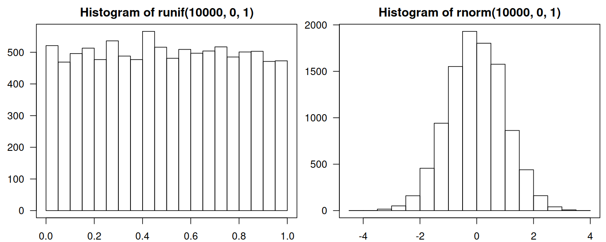

B.2 Numeric Vectors
B.2.1 Creating Numeric Vectors
First let’s introduce a few ways with which we can create numeric vectors.
B.2.1.1 c()
The c() function combines a given list of values to form a sequence:
## [1] 1 2 3## [1] 1 2 3 4 5 6 7 8Note that when we use the assignment operator, <- or = (both are
equivalent), printing of the output is suppressed:
## [1] 1 2 3However, we can enforce it by parenthesising the whole expression:
## [1] 1 2 3In order to determine that x is indeed a numeric vector,
we call:
## [1] "numeric"## [1] "numeric"These two functions might return different results. For instance, in the next chapter we note that a numeric matrix will yield
mode()ofnumericandclass()ofmatrix.
What is more, we can get the number of elements in x by calling:
## [1] 3B.2.1.2 seq()
To create an arithmetic progression,
i.e., a sequence of equally-spaced numbers,
we can call the seq() function
## [1] 1 3 5 7 9If we access the function’s documentation (by executing ?seq in the console),
we’ll note that the function takes a couple of parameters:
from, to, by, length.out etc.
The above call is equivalent to:
## [1] 1 3 5 7 9The by argument can be replaced with length.out, which gives the desired
size:
## [1] 0.00 0.25 0.50 0.75 1.00Note that R supports partial matching of argument names:
## [1] 0.00 0.25 0.50 0.75 1.00Quite often we need progressions with step equal to 1 or -1.
Such vectors can be generated by applying the : operator.
## [1] 1 2 3 4 5 6 7 8 9 10## [1] -1 -2 -3 -4 -5 -6 -7 -8 -9 -10B.2.1.3 rep()
Moreover, rep() replicates a given vector.
Check out the function’s documentation (see ?rep) for
the meaning of the arguments provided below.
## [1] 1 1 1 1 1## [1] 1 2 3 1 2 3 1 2 3 1 2 3## [1] 1 1 2 2 2 2 3 3 3## [1] 1 1 1 1 2 2 2 2 3 3 3 3B.2.1.4 Pseudo-Random Vectors
We can also generate vectors of pseudo-random values. For instance, the following generates 5 deviates from the uniform distribution (every number has the same probability) on the unit (i.e., \([0,1]\)) interval:
## [1] 0.5649012 0.5588051 0.4414829 0.2076393 0.6696355We call such numbers pseudo-random, because they are generated arithmetically. In fact, by setting the random number generator’s state (also called the seed), we can obtain reproducible results.
## [1] 0.2875775 0.7883051 0.4089769 0.8830174 0.9404673## [1] 0.0455565 0.5281055 0.8924190 0.5514350 0.4566147## [1] 0.2875775 0.7883051 0.4089769 0.8830174 0.9404673Note the difference between the uniform distribution on \([0,1]\) and the normal distribution with expected value of \(0\) and standard deviation of \(1\) (also called the standard normal distribution).
par(mfrow=c(1, 2)) # align plots in one row and two columns
hist(runif(10000, 0, 1), las=1); box()
hist(rnorm(10000, 0, 1), las=1); box()
Another useful function samples a number of values from a given vector, either with or without replacement:
## [1] 3 3 10 2 6 5 4 6## [1] 9 5 3 8 1 4 6 10Note that if n is a single number,
sample(n, ...) is equivalent to sample(1:n, ...).
This is a dangerous behaviour than may lead to bugs in our code.
Read more at ?sample.
B.2.2 Vector-Scalar Operations
Mathematically, we sometimes refer to a vector that is reduced to a single component as a scalar. We are used to denoting such objects with lowercase letters such as \(a, b, i, s, x\in\mathbb{R}\).
Note that some programming languages distinguish between atomic numerical entities and length-one vectors, e.g.,
7vs.[7]in Python. This is not the case in R, wherelength(7)returns 1.
Vector-scalar arithmetic operations such as \(s\boldsymbol{x}\) (multiplication of a vector \(\boldsymbol{x}=(x_1,\dots, x_n)\) by a scalar \(s\)) result in a vector \(\boldsymbol{y}\) such that \(y_i=s x_i\), \(i=1,\dots,n\).
The same rule holds for, e.g., \(s+\boldsymbol{x}\), \(\boldsymbol{x}-s\), \(\boldsymbol{x}/s\).
## [1] 0.5 5.0 50.0## [1] 11 12 13 14 15## [1] 0.0 0.2 0.4 0.6 0.8 1.0By \(-\boldsymbol{x}\) we will mean \((-1)\boldsymbol{x}\):
## [1] 0.00 -0.25 -0.50 -0.75 -1.00Note that in R the same rule applies for exponentiation:
## [1] 0 1 4 9 16 25## [1] 1 2 4 8 16 32However, in mathematics, we are not used to writing \(2^{\boldsymbol{x}}\) or \(\boldsymbol{x}^2\).
B.2.3 Vector-Vector Operations
Let \(\boldsymbol{x}=(x_1,\dots,x_n)\) and \(\boldsymbol{y}=(y_1,\dots,y_n)\) be two vectors of identical lengths.
Arithmetic operations \(\boldsymbol{x}+\boldsymbol{y}\) and \(\boldsymbol{x}-\boldsymbol{y}\) are performed elementwise, i.e., they result in a vector \(\boldsymbol{z}\) such that \(z_i=x_i+y_i\) and \(z_i=x_i-y_i\), respectively, \(i=1,\dots,n\).
## [1] 2 12 103 1004## [1] 0 -8 -97 -996Although in mathematics we are not used to using any special notation for elementwise multiplication, division and exponentiation, this is available in R.
## [1] 1 20 300 4000## [1] 1.000 0.200 0.030 0.004## [1] 1e+00 1e+02 1e+06 1e+12
1e+12is a number written in the scientific notation. It means “1 times 10 to the power of 12”, i.e., \(1\times 10^{12}\). Physicists love this notation, because they are used to dealing with very small (think sizes of quarks) and very large (think distances between galaxies) entities.
Moreover, in R the recycling rule is applied if we perform elementwise operations on vectors of different lengths – the shorter vector is recycled as many times as needed to match the length of the longer vector, just as if we were performing:
## [1] 1 2 3 1 2 3 1 2 3 1 2 3Therefore:
## [1] 1 2 3 4 5 6## [1] 1 20 3 40 5 60## [1] 1 20 300 4 50 600## Warning in 1:6 * c(1, 10, 100, 1000): longer object length is
## not a multiple of shorter object length## [1] 1 20 300 4000 5 60Note that a warning is not an error – we still get a result that makes sense.
B.2.4 Aggregation Functions
R implements a couple of aggregation functions:
sum(x)= \(\sum_{i=1}^n x_i=x_1+x_2+\dots+x_n\)prod(x)= \(\prod_{i=1}^n x_i=x_1 x_2 \dots x_n\)mean(x)= \(\frac{1}{n}\sum_{i=1}^n x_i\) – arithmetic meanvar(x)=sum((x-mean(x))^2)/(length(x)-1)= \(\frac{1}{n-1} \sum_{i=1}^n \left(x_i - \frac{1}{n}\sum_{j=1}^n x_j \right)^2\) – variancesd(x)=sqrt(var(x))– standard deviation
see also: min(), max(), median(), quantile().
Remember that you can always access the R manual by typing
?functionname, e.g.,?quantile.
Note that \(\sum_{i=1}^n x_i\) can also be written as \(\displaystyle\sum_{i=1}^n x_i\) or even \(\displaystyle\sum_{i=1,\dots,n} x_i\). These all mean the sum of \(x_i\) for \(i\) from \(1\) to \(n\), that is, the sum of \(x_1\), \(x_2\), …, \(x_n\).
B.2.5 Special Functions
Furthermore, R supports numerous mathematical functions, e.g.,
sqrt(), abs(), round(), log(), exp(), cos(), sin().
All of them are vectorised – when applied on a vector of length \(n\),
they yield a vector of length \(n\) in result.
For example, here is how we can compute the square roots of all the integers between 1 and 9:
## [1] 1.000000 1.414214 1.732051 2.000000 2.236068 2.449490
## [7] 2.645751 2.828427 3.000000B.2.6 Norms and Distances
Norms are used to measure the size of an object. Mathematically, we will also be interested in the following norms:
- Euclidean norm: \[ \|\boldsymbol{x}\| = \|\boldsymbol{x}\|_2 = \sqrt{ \sum_{i=1}^n x_i^2 } \] this is nothing else than the length of the vector \(\boldsymbol{x}\)
- Manhattan (taxicab) norm: \[ \|\boldsymbol{x}\|_1 = \sum_{i=1}^n |x_i| \]
- Chebyshev (maximum) norm: \[ \|\boldsymbol{x}\|_\infty = \max_{i=1,\dots,n} |x_i| = \max\{ |x_1|, |x_2|, \dots, |x_n| \} \]
The above norms can be easily implemented by means of the building blocks introduced above. This is super easy:
## [1] 2.236068## [1] 3## [1] 2Also note that all the norms easily generate the corresponding distances (metrics) between two given points. In particular:
\[ \| \boldsymbol{x}-\boldsymbol{y} \| = \sqrt{ \sum_{i=1}^n \left(x_i-y_i\right)^2 } \]
gives the Euclidean distance (metric) between the two vectors.
## [1] 1This is the “normal” distance that you learned at school.
B.2.7 Dot Product (*)
What is more, given two vectors of identical lengths, \(\boldsymbol{x}\) and \(\boldsymbol{y}\), we define their dot product (a.k.a. scalar or inner product) as:
\[ \boldsymbol{x}\cdot\boldsymbol{y} = \sum_{i=1}^n x_i y_i. \]
Let’s stress that this is not the same as the elementwise vector multiplication in R – the result is a single number.
## [1] 1(*) Note that the squared Euclidean norm of a vector is equal to the dot product of the vector and itself, \(\|\boldsymbol{x}\|^2 = \boldsymbol{x}\cdot\boldsymbol{x}\).
(*) Interestingly, a dot product has a nice geometrical interpretation: \[ \boldsymbol{x}\cdot\boldsymbol{y} = \|\boldsymbol{x}\| \|\boldsymbol{y}\| \cos\alpha \] where \(\alpha\) is the angle between the two vectors. In other words, it is the product of the lengths of the two vectors and the cosine of the angle between them. Note that we can get the cosine part by computing the dot product of the normalised vectors, i.e., such that their lengths are equal to 1.
For example, the two vectors u and v defined above
can be depicted as:

We can compute the angle between them by calling:
## [1] 1## [1] 1.414214## [1] 0.7071068## [1] 45B.2.8 Missing and Other Special Values
R has a notion of a missing (not-available) value. It is very useful in data analysis, as we sometimes don’t have an information on an object’s feature. For instance, we might not know a patient’s age if he was admitted to the hospital unconscious.
Operations on missing values generally result in missing values – that makes a lot sense.
## [1] 12 14 NA 18 20## [1] NAIf we wish to compute a vector’s aggregate after all,
we can get rid of the missing values by calling na.omit():
## [1] 3Note that in R, a dot has no special meaning.
na.omitis as good of a function’s name or variable identifier asna_omit,naOmit,NAOMIT,naomitandNaOmit. Note that, however, R is a case-sensitive language – these are all different symbols. Read more in the Details section of?make.names.
Moreover, some arithmetic operations can result in infinities (\(\pm \infty\)):
## [1] -Inf## [1] InfAlso, sometimes we’ll get a not-a-number, NaN. This is not a missing value,
but a “invalid” result.
## Warning in sqrt(-1): NaNs produced## [1] NaN## Warning in log(-1): NaNs produced## [1] NaN## [1] NaN